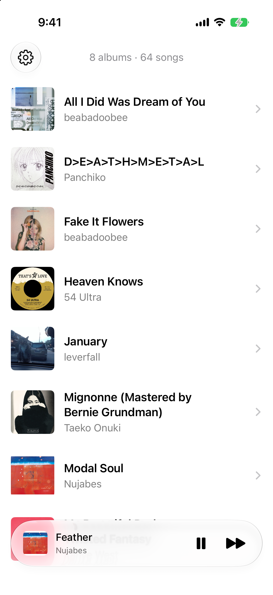

Privacy
Playback settings, cached artwork, and indexes are stored on your device. Oto reads music in place. It does not send this data to the developer or use advertising or analytics services.
Deleting Oto removes its local library data and settings, but does not delete your original music files. If your music is in iCloud Drive, Apple manages those files through your iCloud account. If you contact support, your email address and message are used only to respond to you. For privacy questions, contact support@oto.page.
Support
For support, feedback, or feature requests, email support@oto.page.